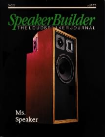
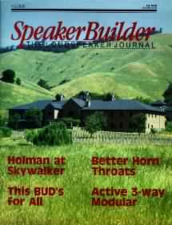

Articles

These articles were published in Speaker Builder in 1989 and 1990,
part of Audio Amateur Publications.
Ms. Speaker |
Tom Holman on THXPart I Part II |
|
 |
 |


© Copyright 2000 Reid A. Woodbury Jr.